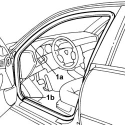
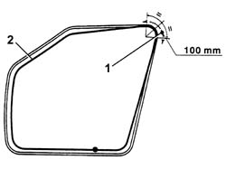
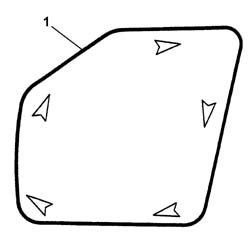

7005A30 Left front side door housing seal - R.R.
- Path
- Procedures > 70 FITTINGS > 7005 passenger compartment front side doors > 7005A FRONT DOOR ASSEMBLY > 7005A30 Left front side door housing seal - R.R.
- Kind
- repair procedure (removal / refitting; the operation number is the code)
- Applies to
- all engines; all production periods
- Interactive page
- https://sloeber94.github.io/elrnDB-lThss/en/#/109012
Applies to: all engines; all production periods
 Removing
Removing
 Refitting
Refitting- Disconnect the negative battery terminal.
See in Op. 7025A34 bonnet lid lock (one) - r+r or repair
See in Op. 7040A37 Fuse access cover in instrument panel - R.R.
-
See in Op. 7025A24 Bonnet release LEVER - R.R.
See in Op. 7040L39 RUNNING BOARD FOR LEFT FRONT DOOR HOUSING - R.R.
See in Op. 7040A44 INSTRUMENT PANEL LEFT SIDE TRIM - R.R.
-
- Release the seal (1a) from its housing taking care to start from the join (1b).

Applies to: all engines; all production periods
Refitting
Removing- Clean the door surround using paper soaked in heptane starting from the top centre line of the door working downwards in a clockwise direction and from the top centre line working downwards in an anti-clockwise direction until the door surround is completed.
- Check that the seal is intact and not damaged.
1. Identify the reference point on the seal (paint mark), then position it in line with the centre line for the top corner.
2. Fit the seal manually until the curve is completed, inside the corner, for a length of 100 mm, then continue fitting the seal on the fitting tool.

Applies to: all engines; all production periods
1. Position the seal following the order shown by the arrows.

Applies to: all engines; all production periods
- Check that the seal adheres perfectly to the bodyshell flange.
See in Op. 7040A44 INSTRUMENT PANEL LEFT SIDE TRIM - R.R.
See in Op. 7040L39 RUNNING BOARD FOR LEFT FRONT DOOR HOUSING - R.R.
See in Op. 7025A24 Bonnet release LEVER - R.R.
See in Op. 7040A37 Fuse access cover in instrument panel - R.R.
See in Op. 7025A34 bonnet lid lock (one) - r+r or repair
- Connect the negative battery terminal.